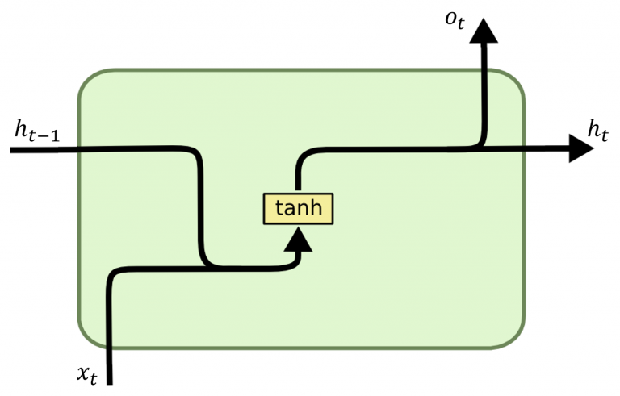
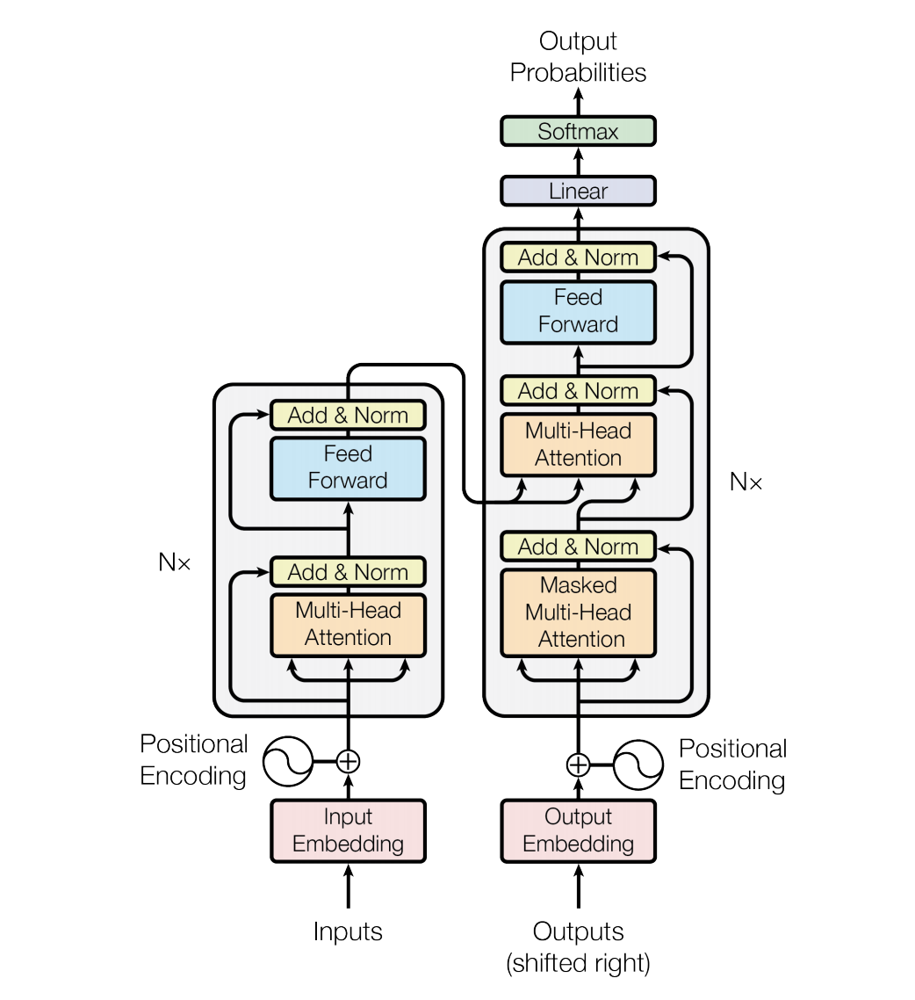

Layer#
A layer is a mapping from input \(X\) to output \(Y\).
Let \(g\) denote the gradient \(\frac{\partial\mathcal{L}}{\partial y}\) for readability.
Basic#
Linear#
Intuition
What: Linear transformation.
Why: Universal Approximation Theorem.
How: Multiply the input with a weight matrix and add a bias vector.
When:
If input/output can be linearly approximated.
If input features need to be converted to a different dimension.
Where: Anywhere.
Pros: Simple, efficient, foundational.
Cons: Cannot capture non-linear/complex patterns.
Math
Notations
IO:
\(\mathbf{x}\in\mathbb{R}^{H_{in}}\): Input vector.
\(\mathbf{y}\in\mathbb{R}^{H_{out}}\): Output vector.
Params:
\(W\in\mathbb{R}^{H_{out}\times H_{in}}\): Weight matrix.
\(\textbf{b}\in\mathbb{R}^{H_{out}}\): Bias vector.
Hyperparams:
\(H_{in}\): Input feature dimension.
\(H_{out}\): Output feature dimension.
Forward
Backward
Code
class Linear:
def __init__(self, input_dim, output_dim, learning_rate=0.01):
self.input_dim = input_dim
self.Y_dim = output_dim
self.W = np.random.randn(input_dim, output_dim) * 0.01
self.b = np.zeros((1, output_dim))
self.lr = learning_rate
def forward(self, X):
self.X = X
self.Y = np.dot(X, self.W) + self.b
return self.Y
def backward(self, dY):
# compute gradients
self.dW = np.dot(self.X.T, dY)
self.db = np.sum(dY, axis=0, keepdims=True)
self.dX = np.dot(dY, self.W.T)
# update params
self.W -= self.lr * self.dW
self.b -= self.lr * self.db
# pass input gradient
return self.dX
Regularization#
Dropout#
Intuition
What: Randomly set a fraction (\(p\)) of neurons to 0 and scale the outputs/gradients on active neurons by \(\frac{1}{1-p}\) during training.
Why: To reduce overfitting.
When: Training only.
Where: Typically on linear layers and convolutional layers.
Pros: Simple, efficient regularization.
Cons: Requires hyperparameter tuning; Can slow down convergence.
Math
Forward:
Backward:
Hyperparams:
\(p\): Dropout probability.
Code
class Dropout:
def __init__(self, dropout_rate=0.5):
self.p = dropout_rate
self.mask = None
def forward(self, X, training=True):
if training:
self.mask = np.random.binomial(1, 1-self.p, size=X.shape) / (1-self.p)
return X * self.mask
else:
return X
def backward(self, dY):
return dY * self.mask
Alpha#
Gaussian#
L1/L2#
Residual Connection#
Intuition
What: Model the residual (\(Y-X\)) instead of the output (\(Y\)).
Why: To reduce vanishing/exploding gradient issues.
When: If convergence or gradient issues occur.
Where: Deep NNs.
Pros: Reduces vanishing/exploding gradients; Higher performance on complex tasks.
Cons: Slightly higher computational cost.
Math
Forward:
Backward:
Hyperparams:
\(\mathcal{F}(\cdot)\): The function of other layers within the residual block.
Code
class ResidualBlock:
def __init__(self, F, input_dim, output_dim, learning_rate=0.01):
self.lr = learning_rate
self.F = F
# If input and output dimensions are different, add a linear layer for the shortcut connection
if input_dim != output_dim:
self.shortcut = Linear(input_dim, output_dim, learning_rate)
else:
self.shortcut = None
def forward(self, X):
self.X = X
if self.shortcut:
output_shortcut = self.shortcut.forward(X)
else:
output_shortcut = X
output_F = self.F.forward(X)
self.Y = output_F + output_shortcut
return self.Y
def backward(self, dY):
if self.shortcut:
d_shortcut = self.shortcut.backward(dY)
else:
d_shortcut = dY
d_F = self.F.backward(dY)
d_input = d_F + d_shortcut
return d_input
Normalization#
Batch#
Layer#
Convolutional#
Intuition
What: Apply a set of filters to input data to extract local features.
Why: To learn spatial hierarchies of features.
How: Slide multiple filters/kernel (i.e., small matrices) over the input data.
At each step, perform element-wise multiplication and summation between each filter and the scanned area, producing a feature map.
When: Used with grid-like data such as images and video frames.
Where: Computer Vision.
Pros:
Translation invariance.
Efficiently captures spatial hierarchies.
Cons:
High computational cost for big data
Requires big data to be performant.
Requires extensive hyperparameter tuning.
Math
Notations
IO:
\(\mathbf{X}\in\mathbb{R}^{H_{in}\times W_{in}\times C_{in}}\): Input volume.
\(\mathbf{Y}\in\mathbb{R}^{H_{out}\times W_{out}\times C_{out}}\): Output volume.
Params:
\(\mathbf{W}\in\mathbb{R}^{F_{H}\times F_{W}\times C_{out}\times C_{in}}\): Filters.
\(\mathbf{b}\in\mathbb{R}^{C_{out}}\): Biases.
Hyperparams:
\(H_{in}, W_{in}\): Input height & width.
\(C_{in}\): #Input channels.
\(C_{out}\): #Filters (i.e., #Output channels).
\(f_h, f_w\): Filter height & width.
\(s\): Stride size.
\(p\): Padding size.
Forward
\[ Y_{h,w,c_{out}}=\sum_{c_{in}=1}^{C_{in}}\sum_{i=1}^{f_h}\sum_{j=1}^{f_w}W_{i,j,c_{out},c_{in}}\cdot X_{sh+i-p,sw+j-p,c_{in}}+b_{c_{out}} \]where
\[\begin{split}\begin{align*} H_{out}&=\left\lfloor\frac{H_{in}+2p-f_h}{s}\right\rfloor+1\\ W_{out}&=\left\lfloor\frac{W_{in}+2p-f_w}{s}\right\rfloor+1 \end{align*}\end{split}\]Backward
\[\begin{split}\begin{align*} &\frac{\partial\mathcal{L}}{\partial W_{i,j,c_{out},c_{in}}}=\sum_{h=1}^{H_{out}}\sum_{w=1}^{W_{out}}g_{h,w,c_{out}}\cdot X_{sh+i-p, sw+j-p, c_{in}}\\ &\frac{\partial\mathcal{L}}{\partial b_{c_{out}}}=\sum_{h=1}^{H_{out}}\sum_{w=1}^{W_{out}}g_{h,w,c_{out}}\\ &\frac{\partial\mathcal{L}}{\partial X_{i,j,c_{in}}}=\sum_{c_{out}=1}^{C_{out}}\sum_{h=1}^{f_h}\sum_{w=1}^{f_w}g_{h,w,c_{out}}\cdot W_{i-sh+p,j-sw+p,c_{out},c_{in}} \end{align*}\end{split}\]Notice it is similar to backprop of linear layer except it sums over the scanned area and removes padding.
Code
class Conv2d:
def __init__(self, filter_size, n_filters, stride=1, padding=0, learning_rate=0.01):
self.f = filter_size # assume equal height & weight
self.n_filters = n_filters
self.s = stride
self.p = padding
self.lr = learning_rate
self.W = np.random.randn(n_filters, filter_size, filter_size) / filter_size**2 # randomly init filter weights
self.b = np.zeros((n_filters, 1)) # zero init biases
def pad_input(self, X):
if self.p > 0:
return np.pad(X, ((0, 0), (self.p, self.p), (self.p, self.p), (0, 0)), mode='constant')
return X
def forward(self, X):
# pad input
self.X = X
self.X_pad = self.pad_input(X)
# calculate output dims
batch_size, in_height, in_width, in_channels = X.shape
self.out_height = (in_height + 2*self.p - self.f) // self.s + 1
self.out_width = (in_width + 2*self.p - self.f) // self.s + 1
# init output tensor
self.Y = np.zeros((batch_size, self.out_height, self.out_width, self.n_filters))
# compute output per scanned area
for h in range(self.out_height):
for w in range(self.out_width):
X_scanned = self.X_pad[:, self.s*h:self.s*h+self.f, self.s*w:self.s*w+self.f, :]
for c in range(self.n_filters):
self.Y[:, h, w, c] = np.sum(X_scanned * self.W[c, :, :, :], axis=(1, 2, 3)) + self.b[c]
return self.Y
def backward(self, dY):
# init gradients
_, in_height, in_width, _ = self.X.shape
dX = np.zeros_like(self.X_pad)
dW = np.zeros_like(self.W)
db = np.zeros_like(self.b)
# compute gradients
for h in range(self.out_height):
for w in range(self.out_width):
region = self.X_pad[:, self.s*h:self.s*h+self.f, self.s*w:self.s*w+self.f, :]
for c in range(self.n_filters):
dW[c] += np.sum(region * (dY[:, h, w, c])[:, None, None, None], axis=0)
db[c] += np.sum(dY[:, h, w, c])
dX[:, self.s*h:self.s*h+self.f, self.s*w:self.s*w+self.f, :] += self.W[c] * (dY[:, h, w, c])[:, None, None, None]
# remove padding
if self.p > 0:
dX = dX[:, self.p:-self.p, self.p:-self.p, :]
# update params
self.W -= self.lr * dW
self.b -= self.lr * db
return dX
Depthwise Separable#
Intuition
What: Depthwise convolution + Pointwise convolution.
Why: To significantly reduce computational cost and #params.
How:
Depthwise: Use a single filter independently per channel.
Pointwise: Use Conv1d to combine the outputs of depthwise convolution.
When: When computational efficiency and model size are crucial.
Where: MobileNets, Xception, etc.
Pros: Significantly higher computational efficiency (time & space).
Cons: Lower accuracy.
Math
Notations
IO:
\(\mathbf{X} \in \mathbb{R}^{H_{in} \times W_{in} \times C_{in}}\): Input volume.
\(\mathbf{Y} \in \mathbb{R}^{H_{out} \times W_{out} \times C_{out}}\): Output volume.
Params:
\(\mathbf{W^d} \in \mathbb{R}^{f_h \times f_w \times C_{in}}\): Depthwise filters.
\(\mathbf{b^d} \in \mathbb{R}^{C_{in}}\): Depthwise biases.
\(\mathbf{W^p} \in \mathbb{R}^{1 \times 1 \times C_{in} \times C_{out}}\): Pointwise filters.
\(\mathbf{b^p} \in \mathbb{R}^{C_{out}}\): Pointwise biases.
Hyperparams:
\(H_{in}, W_{in}\): Input height & width.
\(C_{in}\): #Input channels.
\(C_{out}\): #Output channels.
\(f_h, f_w\): Filter height & width.
\(s\): Stride size.
\(p\): Padding size.
Forward
Depthwise convolution: Calculate \(\mathbf{Z} \in \mathbb{R}^{H_{out} \times W_{out} \times C_{in}}\):
\[ Z_{h,w,c_{in}} = \sum_{i=1}^{f_h} \sum_{j=1}^{f_w} W^d_{i,j,c_{in}} \cdot X_{sh+i-p, sw+j-p, c_{in}} + b^d_{c_{in}} \]Pointwise convolution:
\[ Y_{h,w,c_{out}} = \sum_{c_{in}=1}^{C_{in}} W^p_{1,1,c_{in},c_{out}} \cdot Z_{h,w,c_{in}} + b^p_{c_{out}} \]where $\(\begin{align*} H_{out} &= \left\lfloor \frac{H_{in} + 2p - f_h}{s} \right\rfloor + 1 \\ W_{out} &= \left\lfloor \frac{W_{in} + 2p - f_w}{s} \right\rfloor + 1 \end{align*}\)$
Backward
Pointwise convolution: Let \(g^{p}\in\mathbb{R}^{H_{out}\times W_{out}\times C_{out}}\) be \(\frac{\partial\mathcal{L}}{\partial\mathbf{Y}}\).
\[\begin{split}\begin{align*} &\frac{\partial \mathcal{L}}{\partial W^p_{1,1,c_{in},c_{out}}} = \sum_{h=1}^{H_{out}} \sum_{w=1}^{W_{out}} g^{p}_{h,w,c_{out}} \cdot Z_{h,w,c_{in}}\\ &\frac{\partial \mathcal{L}}{\partial b^p_{c_{out}}} = \sum_{h=1}^{H_{out}} \sum_{w=1}^{W_{out}} g^{p}_{h,w,c_{out}}\\ &\frac{\partial \mathcal{L}}{\partial Z_{h,w,c_{in}}} = \sum_{c_{out}=1}^{C_{out}} g^{p}_{h,w,c_{out}} \cdot W^p_{1,1,c_{in},c_{out}} \end{align*}\end{split}\]Depthwise convolution: Let \(g^{d}\in\mathbb{R}^{H_{out}\times W_{out}\times C_{in}}\) be \(\frac{\partial\mathcal{L}}{\partial\mathbf{Z}}\).
\[\begin{split}\begin{align*} &\frac{\partial \mathcal{L}}{\partial W^d_{i,j,c_{in}}} = \sum_{h=1}^{H_{out}} \sum_{w=1}^{W_{out}} g^d_{h,w,c_{in}} \cdot X_{sh+i-p, sw+j-p, c_{in}}\\ &\frac{\partial \mathcal{L}}{\partial b_{d,c_{in}}} = \sum_{h=1}^{H_{out}} \sum_{w=1}^{W_{out}} g^d_{h,w,c_{in}}\\ &\frac{\partial \mathcal{L}}{\partial X_{i,j,c_{in}}} = \sum_{h=1}^{f_h} \sum_{w=1}^{f_w} g^d_{h,w,c_{in}} \cdot W^d_{i-sh+p,j-sw+p,c_{in}} \end{align*}\end{split}\]
Code
class DepthwiseSeparableConv2d:
def __init__(self, filter_size, n_filters, stride=1, padding=0, learning_rate=0.01):
self.f = filter_size # assume equal height & width
self.n_filters = n_filters
self.s = stride
self.p = padding
self.lr = learning_rate
self.W_d = np.random.randn(filter_size, filter_size, n_filters) / filter_size**2
self.b_d = np.zeros((n_filters, 1))
self.W_p = np.random.randn(1, 1, n_filters, n_filters) / n_filters
self.b_p = np.zeros((n_filters, 1))
def pad_input(self, X):
if self.p > 0:
return np.pad(X, ((0, 0), (self.p, self.p), (self.p, self.p), (0, 0)), mode='constant')
return X
def forward(self, X):
# pad input
self.X = X
self.X_pad = self.pad_input(X)
# calculate output dims
batch_size, in_height, in_width, in_channels = X.shape
self.out_height = (in_height + 2*self.p - self.f) // self.s + 1
self.out_width = (in_width + 2*self.p - self.f) // self.s + 1
# init depthwise output tensor
self.Z = np.zeros((batch_size, self.out_height, self.out_width, in_channels))
# depthwise convolution
for h in range(self.out_height):
for w in range(self.out_width):
X_scanned = self.X_pad[:, self.s*h:self.s*h+self.f, self.s*w:self.s*w+self.f, :]
for c in range(in_channels):
self.Z[:, h, w, c] = np.sum(X_scanned[:, :, :, c] * self.W_d[:, :, c], axis=(1, 2)) + self.b_d[c]
# init pointwise output tensor
self.Y = np.zeros((batch_size, self.out_height, self.out_width, self.n_filters))
# pointwise convolution
for h in range(self.out_height):
for w in range(self.out_width):
for c in range(self.n_filters):
self.Y[:, h, w, c] = np.sum(self.Z[:, h, w, :] * self.W_p[:, :, :, c], axis=1) + self.b_p[c]
return self.Y
def backward(self, dY):
batch_size, in_height, in_width, in_channels = self.X.shape
# init gradients
dX = np.zeros_like(self.X_pad)
dW_d = np.zeros_like(self.W_d)
db_d = np.zeros_like(self.b_d)
dW_p = np.zeros_like(self.W_p)
db_p = np.zeros_like(self.b_p)
# gradients for pointwise convolution
for h in range(self.out_height):
for w in range(self.out_width):
for c in range(self.n_filters):
db_p[c] += np.sum(dY[:, h, w, c])
dW_p[:, :, :, c] += np.sum(self.Z[:, h, w, :, None] * dY[:, h, w, c][:, None, None, None], axis=0)
self.Z[:, h, w, :] += dY[:, h, w, c][:, None] * self.W_p[:, :, :, c]
# gradients for depthwise convolution
for h in range(self.out_height):
for w in range(self.out_width):
X_scanned = self.X_pad[:, self.s*h:self.s*h+self.f, self.s*w:self.s*w+self.f, :]
for c in range(in_channels):
db_d[c] += np.sum(self.Z[:, h, w, c])
dW_d[:, :, c] += np.sum(X_scanned[:, :, :, c] * self.Z[:, h, w, c][:, None, None], axis=0)
dX[:, self.s*h:self.s*h+self.f, self.s*w:self.s*w+self.f, c] += self.W_d[:, :, c] * self.Z[:, h, w, c][:, None, None]
# remove padding
if self.p > 0:
dX = dX[:, self.p:-self.p, self.p:-self.p, :]
# update params
self.W_d -= self.lr * dW_d
self.b_d -= self.lr * db_d
self.W_p -= self.lr * dW_p
self.b_p -= self.lr * db_p
return dX
Atrous/Dilated#
Intuition
What: Add holes between filter elements (i.e., dilation).
Why: The filters can capture larger contextual info without increasing #params.
How: Introduce a dilation rate \(r\) to determine the space between the filter elements. Then compute convolution accordingly.
When: When understanding the broader context is important.
Where: Semantic image segmentation, object detection, depth estimation, optical flow estimation, etc.
Pros:
Larger receptive fields without increasing #params.
Captures multi-scale info without upsampling layers.
Cons:
Requires very careful hyperparameter tuning, or info loss.
Math
Notations
IO:
\(\mathbf{X}\in\mathbb{R}^{H_{in}\times W_{in}\times C_{in}}\): Input volume.
\(\mathbf{Y}\in\mathbb{R}^{H_{out}\times W_{out}\times C_{out}}\): Output volume.
Params:
\(\mathbf{W}\in\mathbb{R}^{F_{H}\times F_{W}\times C_{out}\times C_{in}}\): Filters.
\(\mathbf{b}\in\mathbb{R}^{C_{out}}\): Biases.
Hyperparams:
\(H_{in}, W_{in}\): Input height & width.
\(C_{in}\): #Input channels.
\(C_{out}\): #Filters (i.e., #Output channels).
\(f_h, f_w\): Filter height & width.
\(s\): Stride size.
\(p\): Padding size.
\(r\): Dilation rate.
Forward
(optional) Pad input tensor: \(\mathbf{X}^\text{pad}\in\mathbb{R}^{(H_{in}+2p)\times (W_{in}+2p)\times C_{in}}\)
Perform element-wise multiplication (i.e., convolution):
\[ Y_{h,w,c_{out}}=\sum_{c_{in}=1}^{C_{in}}\sum_{i=1}^{f_h}\sum_{j=1}^{f_w}W_{i,j,c_{out},c_{in}}\cdot X_{sh+r(i-1)-p,sw+r(j-1)-p,c_{in}}+b_{c_{out}} \]where
\[\begin{split}\begin{align*} H_{out}&=\left\lfloor\frac{H_{in}+2p-r(f_h-1)-1}{s}\right\rfloor+1\\ W_{out}&=\left\lfloor\frac{W_{in}+2p-r(f_w-1)-1}{s}\right\rfloor+1 \end{align*}\end{split}\]
Backward
\[\begin{split}\begin{align*} &\frac{\partial\mathcal{L}}{\partial W_{i,j,c_{out},c_{in}}}=\sum_{h=1}^{H_{out}}\sum_{w=1}^{W_{out}}g_{h,w,c_{out}}\cdot X_{sh+r(i-1)-p, sw+r(j-1)-p, c_{in}}\\ &\frac{\partial\mathcal{L}}{\partial b_{c_{out}}}=\sum_{h=1}^{H_{out}}\sum_{w=1}^{W_{out}}g_{h,w,c_{out}}\\ &\frac{\partial\mathcal{L}}{\partial X_{i,j,c_{in}}}=\sum_{c_{out}=1}^{C_{out}}\sum_{h=1}^{f_h}\sum_{w=1}^{f_w}g_{h,w,c_{out}}\cdot W_{r(i-1)-sh+p,r(j-1)-sw+p,c_{out},c_{in}} \end{align*}\end{split}\]
Code
class AtrousConv2d:
def __init__(self, filter_size, n_filters, dilation_rate=1, stride=1, padding=0, learning_rate=0.01):
self.f = filter_size # assume equal height & width
self.n_filters = n_filters
self.r = dilation_rate
self.s = stride
self.p = padding
self.lr = learning_rate
self.W = np.random.randn(filter_size, filter_size, n_filters) / filter_size**2
self.b = np.zeros((n_filters, 1))
def pad_input(self, X):
if self.p > 0:
return np.pad(X, ((0, 0), (self.p, self.p), (self.p, self.p), (0, 0)), mode='constant')
return X
def forward(self, X):
# pad input
self.X = X
self.X_pad = self.pad_input(X)
# calculate output dims
batch_size, in_height, in_width, in_channels = X.shape
self.out_height = (in_height + 2*self.p - self.r*(self.f-1) - 1) // self.s + 1
self.out_width = (in_width + 2*self.p - self.r*(self.f-1) - 1) // self.s + 1
# init output tensor
self.Y = np.zeros((batch_size, self.out_height, self.out_width, self.n_filters))
# compute output per scanned area
for h in range(self.out_height):
for w in range(self.out_width):
X_scanned = self.X_pad[:, self.s*h:self.s*h+self.r*(self.f-1)+1:self.r, self.s*w:self.s*w + self.r*(self.f-1)+1:self.r, :]
for c in range(self.n_filters):
self.Y[:, h, w, c] = np.sum(X_scanned * self.W[:, :, :, c], axis=(1, 2, 3)) + self.b[c]
return self.Y
def backward(self, dY):
batch_size, in_height, in_width, in_channels = self.X.shape
# init gradients
dX = np.zeros_like(self.X_pad)
dW = np.zeros_like(self.W)
db = np.zeros_like(self.b)
# compute gradients
for h in range(self.out_height):
for w in range(self.out_width):
X_scanned = self.X_pad[:, self.s*h:self.s*h + self.r*(self.f-1)+1:self.r,
self.s*w:self.s*w + self.r*(self.f-1)+1:self.r, :]
for c in range(self.n_filters):
db[c] += np.sum(dY[:, h, w, c])
dW[:, :, :, c] += np.sum(X_scanned * (dY[:, h, w, c])[:, None, None, None], axis=0)
dX[:, self.s*h:self.s*h + self.r*(self.f-1)+1:self.r, self.s*w:self.s*w + self.r*(self.f-1)+1:self.r, :] += self.W[:, :, :, c] * (dY[:, h, w, c])[:, None, None, None]
# remove padding
if self.p > 0:
dX = dX[:, self.p:-self.p, self.p:-self.p, :]
# update params
self.W -= self.lr * dW
self.b -= self.lr * db
return dX
Pooling#
Intuition
What: Convolution but
computes a heuristic per scanned patch.
uses the same #channels.
Why: Dimensionality reduction while preserving dominant features.
How: Slide the pooling window over the input & apply the heuristic within the scanned patch.
Max: Output the maximum value from each patch.
Average: Output the average value of each patch.
When: When downsampling is necessary.
Where: Anywhere with Convolutional layer.
Pros:
Significantly higher computational efficiency (time & space).
No params to train.
Reduces overfitting.
Preserves translation invariance without losing too much info.
High robustness.
Cons:
Slight spatial info loss.
Requires hyperparameter tuning.
Large filter or stride results in coarse features.
Max vs Average:
Max: Captures most dominant features; higher robustness.
Avg: Preserves more info; provides smoother features; dilutes the importance of dominant features.
Math
Notations
IO:
\(\mathbf{X}\in\mathbb{R}^{H_{in}\times W_{in}\times C_{in}}\): Input volume.
\(\mathbf{Y}\in\mathbb{R}^{H_{out}\times W_{out}\times C_{in}}\): Output volume.
Hyperparams:
\(H_{in}, W_{in}\): Input height & width.
\(C_{in}\): #Input channels.
\(f_h, f_w\): Filter height & width.
\(s\): Stride size.
Forward
\[\begin{split}\begin{array}{ll} \text{Max:} & Y_{h,w,c}=\max_{i=1,\cdots,f_h\ |\ j=1,\cdots,f_w}X_{sh+i,sw+j,c}\\ \text{Avg:} & Y_{h,w,c}=\frac{1}{f_hf_w}\sum_{i=1}^{f_h}\sum_{j=1}^{f_w}X_{sh+i,sw+j,c} \end{array}\end{split}\]where
\[\begin{split}\begin{align*} H_{out}&=\left\lfloor\frac{H_{in}-f_h}{s}\right\rfloor+1\\ W_{out}&=\left\lfloor\frac{W_{in}-f_h}{s}\right\rfloor+1 \end{align*}\end{split}\]Backward
\[\begin{split}\begin{array}{ll} \text{Max:} & \frac{\partial\mathcal{L}}{\partial X_{sh+i,sw+j,c}}=g_{h,w,c}\text{ if }X_{sh+i,sw+j,c}=Y_{h,w,c}\\ \text{Avg:} & \frac{\partial\mathcal{L}}{\partial X_{sh+i,sw+j,c}}=\frac{g_{h,w,c}}{f_hf_w} \end{array}\end{split}\]Max: Gradients only propagate to the max element of each window.
Avg: Gradients are equally distributed among all elements in each window.
Code
import numpy as np
class Pooling2D:
def __init__(self, filter_size, stride=1, padding=0, mode: Literal['max', 'avg']='max'):
self.f = filter_size
self.s = stride
self.mode = mode
def forward(self, X):
# calculate output dims
batch_size, in_height, in_width, in_channels = X.shape
self.out_height = (in_height-self.f) // self.s + 1
self.out_width = (in_width-self.f) // self.s + 1
# init output tensor
self.Y = np.zeros((batch_size, self.out_height, self.out_width, in_channels))
# perform pooling
for h in range(self.out_height):
for w in range(self.out_width):
X_scanned = X[:, self.s*h:self.s*h+self.f, self.s*w:self.s*w+self.f, :]
if self.mode == 'max':
self.Y[:, h, w, :] = np.max(X_scanned, axis=(1, 2))
elif self.mode == 'avg':
self.Y[:, h, w, :] = np.mean(X_scanned, axis=(1, 2))
return self.Y
def backward(self, dY):
batch_size, in_height, in_width, in_channels = dY.shape
# initialize gradient tensor
dX = np.zeros_like(self.X)
# propagate gradients
for h in range(self.out_height):
for w in range(self.out_width):
X_scanned = self.X[:, self.s*h:self.s*h+self.f, self.s*w:self.s*w+self.f, :]
for c in range(in_channels):
if self.mode == 'max':
mask = (X_scanned[:, :, :, c] == self.Y[:, h, w, c][:, None, None])
dX[:, self.s*h:self.s*h+self.f, self.s*w:self.s*w+self.f, c] += mask * dY[:, h, w, c][:, None, None]
elif self.mode == 'avg':
dX[:, self.s*h:self.s*h+self.f, self.s*w:self.s*w+self.f, c] += dY[:, h, w, c][:, None, None] / (self.f*self.f)
return dX
Recurrent#
{kind=link}
Idea: recurrence - maintain a hidden state that captures information about previous inputs in the sequence
Notations:
\( x_t\): input at time \(t\) of shape \((m,H_{in}) \)
\( h_t\): hidden state at time \(t\) of shape \((D,m,H_{out}) \)
\( W_{xh}\): weight matrix of shape \((H_{out},H_{in})\) if initial layer, else \((H_{out},DH_{out}) \)
\( W_{hh}\): weight matrix of shape \((H_{out},H_{out}) \)
\( H_{in}\): input size, #features in \(x_t \)
\( H_{out}\): hidden size, #features in \(h_t \)
\( m \): batch size
\( D\): \(=2\) if bi-directional else \(1 \)
Cons:
Short-term memory: hard to carry info from earlier steps to later ones if long seq
Vanishing gradient: gradients in earlier parts become extremely small if long seq
GRU#
{kind=link}
Idea: Gated Recurrent Unit - use 2 gates to address long-term info propagation issue in RNN:
Reset gate: determine how much of \( h_{t-1}\) should be ignored when computing \(\tilde{h}\_t \).
Update gate: determine how much of \( h_{t-1}\) should be retained for \(h_t \).
Candidate: calculate candidate \( \tilde{h}\_t\) with reset \(h_{t-1} \).
Final: calculate weighted average between candidate \( \tilde{h}\_t\) and prev state \(h_{t-1} \) with the retain ratio.
Notations:
\( r_t\): reset gate at time \(t\) of shape \((m,H_{out}) \)
\( z_t\): update gate at time \(t\) of shape \((m,H_{out}) \)
\( \tilde{h}\_t\): candidate hidden state at time \(t\) of shape \((m,H_{out}) \)
\( \odot \): element-wise product
LSTM#

Idea: Long Short-Term Memory - use 3 gates:
Input gate: determine what new info from \( x_t\) should be added to cell state \(c_t \).
Forget gate: determine what info from prev cell \( c_{t-1} \) should be forgotten.
Candidate cell: create a new candidate cell from \( x_t\) and \(h_{t-1} \).
Update cell: use \( i_t\) and \(f_t \) to combine prev and new candidate cells.
Output gate: determine what info from curr cell \( c_t\) should be added to output \(h_t \).
Final: simply apply \( o_t\) to activated cell \(c_t \).
Notations:
\( i_t\): input gate at time \(t\) of shape \((m,H_{out}) \)
\( f_t\): forget gate at time \(t\) of shape \((m,H_{out}) \)
\( c_t\): cell state at time \(t\) of shape \((m,H_{cell}) \)
\( o_t\): output gate at time \(t\) of shape \((m,H_{out}) \)
\( H_{cell}\): cell hidden size (in most cases same as \(H_{out} \))
Bidirectional#
Stacked#
Transformer#
{kind=link}
What: Transformer exploits self-attention mechanisms for sequential data.
Why:
long-range dependencies: directly model relationships between any two positions in the sequence regardless of their distance, whereas RNNs struggle with tokens that are far apart.
parallel processing: process all tokens in parallel, whereas RNNs process them in sequence.
flexibility: can be easily modified and transferred to various structures and tasks.
Where: NLP, CV, Speech, Time Series, Generative tasks, etc.
When:
sequential data independence: a sequence can be processed in parallel to a certain extent.
importance of contextual relationships
importance of high-dimensional representations
sufficient data & sufficient computational resources
How:
All layers used in transformer:
Each sublayer follows this structure: \( \text{LayerNorm}(x+\text{Sublayer}(x)) \)
Input: input/output token embeddings \( \xrightarrow{\text{PE}} \) input for Encoder/Decoder
Encoder: input \( \xrightarrow{\text{MHA}}\)\(\xrightarrow{\text{FFN}}\) \(K\)&\(V \) for Decoder
Decoder: output \( \xrightarrow{\text{Masked MHA}}\) \(Q\) + Encoder’s \(K\)&\(V\) \(\xrightarrow{\text{MHA}}\)\(\xrightarrow{\text{FFN}} \) Decoder embeddings
Output: Decoder embeddings \( \xrightarrow{\text{Linear}}\) embeddings shaped for token prediction \(\xrightarrow{\text{Softmax}} \) token probabilities
Training:
Parameters:
Encoder: \( \text{\\#params}=h\cdot d\_{\text{model}}\cdot (2d\_k+d\_v)+2\cdot d\_{\text{model}}\cdot d\_{\text{ff}} \)
Decoder: \( \text{\\#params}=2\cdot h\cdot d\_{\text{model}}\cdot (2d\_k+d\_v)+2\cdot d\_{\text{model}}\cdot d\_{\text{ff}} \)
Hyperparameters:
#layers
hidden size
#heads
learning rate (& warm-up steps)
Inference:
Process input tokens in parallel via encoder.
Generate output tokens sequentially via decoder.
Pros:
high computation efficiency (training & inference)
high performance
wide applicability
Cons:
require sufficient computation resources
require sufficient large-scale data
Positional Encoding#
What: Positional Encoding encodes sequence order info of tokens into embeddings.
Why: So that the model can still make use of the sequence order info since no recurrence/convolution is available for it.
Where: After tokenization & Before feeding into model.
When: The hypothesis that relative positions allow the model to learn to attend easier holds.
How: sinusoid with wavelengths from a geometric progression from \( 2\pi\) to \(10000\cdot2\pi \)
\( pos \): absolute position of the token
\( i \): dimension
For any fixed offset \( k\), \(PE_{pos+k}\) is a linear function of \(PE_{pos} \).
Pros:
allow model to extrapolate to sequence lengths longer than the training sequences
Cons: ???
Scaled Dot-Product Attention#
{kind=link}
What: An effective & efficient variation of self-attention.
Why:
The end goal is Attention - “Which parts of the sentence should we focus on?”
We want to capture the most relevant info in the sentence.
And we also want to keep track of all info in the sentence as well, just with different weights.
We want to create contextualized representations of the sentence.
Therefore, attention mechanism - we want to assign different attention scores to each token.
When:
linearity: Relationship between tokens can be captured via linear transformation.
Position independence: Relationship between tokens are independent of positions (fixed by Positional Encoding).
How:
Preliminaries:
Query (Q): a question about a token - “How important is this token in the context of the whole sentence?”
Key (K): a piece of unique identifier about a token - “Here’s something unique about this token.”
Value (V): the actual meaning of a token - “Here’s the content about this token.”
Procedure:
Compare the similarity between the Q of one word and the K of every other word.
The more similar, the more attention we should give to that word for the queried word.
Scale down by \( \sqrt{d_k} \) to avoid the similarity scores being too large.
Dot products grow large in magnitude, pushing the softmax function into regions where it has extremely small gradients.
They grow large because, if \( q,k\sim N(0,1)\), then \(qk=\sum_{i=1}^{d_k}q_ik_i\sim N(0,d_k) \).
Convert the attention scores into a probability distribution.
Softmax sums up to 1 and emphasizes important attention weights (and reduces the impact of negligible ones).
Calculate the weighted combination of all words, for each queried word, as the final attention score.
Pros:
significantly higher computational efficiency (time & space) than additive attention
Cons:
outperformed by additive attention if without scaling for large values of \( d_k \)
Multi-Head Attention#
{kind=link}
What: A combination of multiple scaled dot-product attention heads in parallel.
Masked MHA: mask the succeeding tokens off because they can’t be seen during decoding.
Why: To allow the model to jointly attend to info from different representation subspaces at different positions.
When: The assumption of independence of attention heads holds.
How:
\( W_i^Q\in\mathbb{R}^{d_\text{model}\times d_k},W_i^K\in\mathbb{R}^{d_\text{model}\times d_k},W_i^V\in\mathbb{R}^{d_\text{model}\times d_v} \): learnable linear projection params.
\( W^O\in\mathbb{R}^{d_\text{model}\times hd_v} \): learnable linear combination weights.
\( h=8, d_k=d_v=\frac{d_\text{model}}{h}=64 \) in the original paper.
Pros:
better performance than single head
Cons: ???
Postion-wise Feed-Forward Networks#
What: 2 linear transformations with ReLU in between.
Why: Just like 2 convolutions with kernel size 1.
How:
\( d_\text{model}=512 \)
\( d_\text{FF}=2048 \)
Activation#
An activation function adds nonlinearity to the output of a layer to enhance complexity. ReLU and Softmax are SOTA.
Notations:
\( z \): input (element-wise)
Binary-like#
Sigmoid#
Idea:
\( \sigma(z)\in(0,1)\) and \(\sigma(0)=0.5 \).
Pros:
imitation of the firing rate of a neuron, 0 if too negative and 1 if too positive.
smooth gradient.
Cons:
vanishing gradient: gradients rapidly shrink to 0 along backprop as long as any input is too positive or too negative.
non-zero centric bias \( \rightarrow \) non-zero mean activations.
computationally expensive.
Tanh#
Idea:
\( \tanh(z)\in(-1,1)\) and \(\tanh(0)=0 \).
Pros:
zero-centered
imitation of the firing rate of a neuron, -1 if too negative and 1 if too positive.
smooth gradient.
Cons:
vanishing gradient.
computationally expensive.
Linear Units (Rectified)#
ReLU#
Name: Rectified Linear Unit
Idea:
convert negative linear outputs to 0.
Pros:
no vanishing gradient
activate fewer neurons
much less computationally expensive compared to sigmoid and tanh.
Cons:
dying ReLU: if most inputs are negative, then most neurons output 0 \( \rightarrow\) no gradient for such neurons \(\rightarrow\) no param update \(\rightarrow \) they die. (NOTE: A SOLVABLE DISADVANTAGE)
Cause 1: high learning rate \( \rightarrow\) too much subtraction in param update \(\rightarrow\) weight too negative \(\rightarrow \) input for neuron too negative.
Cause 2: bias too negative \( \rightarrow \) input for neuron too negative.
activation explosion as \( z\rightarrow\infty \). (NOTE: NOT A SEVERE DISADVANTAGE SO FAR)
LReLU#
Name: Leaky Rectified Linear Unit
Params:
\( \alpha\in(0,1) \): hyperparam (negative slope), default 0.01.
Idea:
scale negative linear outputs by \( \alpha \).
Pros:
no dying ReLU.
Cons:
slightly more computationally expensive than ReLU.
activation explosion as \( z\rightarrow\infty \).
PReLU#
Name: Parametric Rectified Linear Unit
Params:
\( \alpha\in(0,1) \): learnable parameter (negative slope), default 0.25.
Idea:
scale negative linear outputs by a learnable \( \alpha \).
Pros:
a variable, adaptive parameter learned from data.
Cons:
slightly more computationally expensive than LReLU.
activation explosion as \( z\rightarrow\infty \).
RReLU#
Name: Randomized Rectified Linear Unit
Params:
\( \alpha\sim\mathrm{Uniform}(l,u) \): a random number sampled from a uniform distribution.
\( l,u \): hyperparams (lower bound, upper bound)
Idea:
scale negative linear outputs by a random \( \alpha \).
Pros:
reduce overfitting by randomization.
Cons:
slightly more computationally expensive than LReLU.
activation explosion as \( z\rightarrow\infty \).
Linear Units (Exponential)#
ELU#
Name: Exponential Linear Unit
Params:
\( \alpha \): hyperparam, default 1.
Idea:
convert negative linear outputs to the non-linear exponential function above.
Pros:
mean unit activation is closer to 0 \( \rightarrow \) reduce bias shift (i.e., non-zero mean activation is intrinsically a bias for the next layer.)
lower computational complexity compared to batch normalization.
smooth to \( -\alpha \) slowly with smaller derivatives that decrease forwardprop variation.
faster learning and higher accuracy for image classification in practice.
Cons:
slightly more computationally expensive than ReLU.
activation explosion as \( z\rightarrow\infty \).
SELU#
Name: Scaled Exponential Linear Unit
Params:
\( \alpha \): hyperparam, default 1.67326.
\( \lambda \): hyperparam (scale), default 1.05070.
Idea:
scale ELU.
Pros:
self-normalization \( \rightarrow \) activations close to zero mean and unit variance that are propagated through many network layers will converge towards zero mean and unit variance.
Cons:
more computationally expensive than ReLU.
activation explosion as \( z\rightarrow\infty \).
CELU#
Name: Continuously Differentiable Exponential Linear Unit
Params:
\( \alpha \): hyperparam, default 1.
Idea:
scale the exponential part of ELU with \( \frac{1}{\alpha} \) to make it continuously differentiable.
Pros:
smooth gradient due to continuous differentiability (i.e., \( \mathrm{CELU}'(0)=1 \)).
Cons:
slightly more computationally expensive than ELU.
activation explosion as \( z\rightarrow\infty \).
Linear Units (Others)#
GELU#
Name: Gaussian Error Linear Unit
Idea:
weigh each output value by its Gaussian cdf.
Pros:
throw away gate structure and add probabilistic-ish feature to neuron outputs.
seemingly better performance than the ReLU and ELU families, SOTA in transformers.
Cons:
slightly more computationally expensive than ReLU.
lack of practical testing at the moment.
SiLU#
Name: Sigmoid Linear Unit
Idea:
weigh each output value by its sigmoid value.
Pros:
throw away gate structure.
seemingly better performance than the ReLU and ELU families.
Cons:
worse than GELU.
Softplus#
Idea:
smooth approximation of ReLU.
Pros:
differentiable and thus theoretically better than ReLU.
Cons:
empirically far worse than ReLU in terms of computation and performance.
Multiclass#
Softmax#
Idea:
convert each value \( z_i\) in the output tensor \(\mathbf{z}\) into its corresponding exponential probability s.t. \(\sum_i{\mathrm{softmax}(z_i)}=1 \).
Pros:
your single best choice for multiclass classification.
Cons:
mutually exclusive classes (i.e., one input can only be classified into one class.)
Softmin#
Idea:
reverse softmax.
Pros:
suitable for multiclass classification.
Cons:
why not softmax.